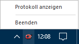
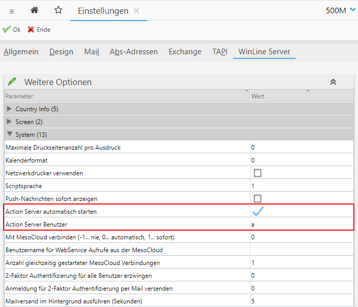

Mit dem WinLine Action Server gibt es die Möglichkeit, Auswertungen und Dienste auf einer Server Maschine oder auch auf der eigenen Workstation zeitlich zu steuern und automatisch arbeiten zu lassen. Besonders von Nutzen ist der Action Server bei zeitaufwändigen und umfangreichen Auswertungen, da eine enorme Zeitersparnis garantiert werden kann. Die Auswertungen werden zum Beispiel in der Nacht vorbereitet und erstellt und können zu Arbeitsbeginn am nächsten Morgen ohne lange Wartezeiten sofort am Bildschirm aufgerufen werden. Auch ein Computer Cluster kann damit in WinLine abgebildet und eine optimale Lastverteilung auf mehrere Maschinen realisiert werden.
Folgenden Funktionen/Aktionen können mit dem WinLine Action Server ausgeführt werden:
ü Vordefinierte Reports
ü Vordefinierte OLAP-Analysen
ü Automatische Datensicherungen
ü EXIM-Funktionen
ü Archivexport / Archivimport / Archivanalyse
ü XML-Export
ü Makro ausführen
ü Zahlungsausgleich
ü Microsoft Exchange Synchronisation
ü Alerts / Notifications
ü Beleg Pro-Import
ü BI Enterprise Report-Versand
ü Erstellung / Aktualisierung von Datenquellen
ü Versand von eMails anhand Kampagnen
ü Score Ranglisten und Erfolge aktualisieren
Der Action Server
Zum Ausführen der Aktionen muss der Action Server gestartet sein. Dieses kann manuell oder automatisch geschehen:
ü Manuell (Tray Mode)
Der Start
des Action Servers erfolgt manuell in der WinLine START über den Menübereich
"Action Server" und dem dortigen Menüpunkt "Starten". Alternativ kann die
WinLine auch mittels Parameter "cwlstart.exe /REPORTSERVER" gestartet
werden.
Dieser WinLine Action Server läuft anschließend im "Tray Mode", d.h.
es wird nur das Icon im
SystemTray angezeigt. Beim Klick auf das Icon wird ein Menü geöffnet, über
welches das Action Server Protokoll gedruckt oder die Server Applikation beendet
werden kann.

Hinweis
Ein Schließen der WinLine stoppt NICHT den "TrayMode" des Action Server!
ü Windows Dienst
Der Start des
Action Servers erfolgt als Windows Dienst, wobei dieser vom mesonic
Fachhandelspartner eingerichtet werden kann. Der Action Server startet in diesem
Fall direkt beim Start von Windows, wodurch eine manuelle Anwahl eines
Menüpunkts oder ähnliches entfällt.
Eine Übersicht der getätigten Aktionen
kann jederzeit dem Action Server -
Protokoll entnommen werden.
Hinweis
Wird bei der Action Server-Aktion auch ein Mailversand initiiert, so muss der Versand via SMPT erfolgen!
ü WinLine Server
Der Start des
Action Servers erfolgt über den Start des WinLine Servers, welcher in der Regel
via Windows Dienst ausgeführt wird. Die Aktivierung dieser Start-Variante
erfolgt über die WinLine mobile und die dortigen Einstellungen (Register "WinLine
Server").

Achtung
Bei einem Start via WinLine Server kann die Aktion BI Enterprise Report nicht ausgeführt werden. Sollte bei einer Action Server-Aktion auch ein Mailversand initiiert werden, so muss der Versand via SMPT erfolgen!
Im Netzwerk können beliebig viele WinLine Action Server gestartet werden. Voraussetzung ist, dass auf der jeweiligen Maschine eine WinLine Installation vorhanden ist. Der bzw. alle Action Server selbst suchen in einem festgelegten Intervall (standardmäßig 20 Sekunden) nach abzuarbeitenden Aktionen. Wird eine "fällige" Aktion gefunden, bekommt diese den Status "In Arbeit", so dass kein anderer aktiver Server dieselbe Aktion starten kann.
Nach der Ausführung der Aktion wird ein Eintrag in das "Action Server - Protokoll" geschrieben, welches mit dem Menüpunkt "Protokoll" ausgewertet werden kann.